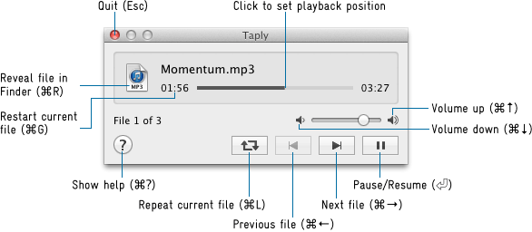

Taply is a simple audio file player. Although many similar tools exist for macOS, Taply is designed to be as minimal as possible: a tiny floating window that quits automatically after playback finishes, making it perfect for quickly scanning through a large number of audio files.
2.0.0-dev (maintained by Richard Li):
Double-click Taply to see a file chooser panel. Select one or more audio files to start playback. Files that cannot be played will be skipped automatically, and Taply will quit after all files have been played.
Right-click or Control-click in any empty space within the window to access the contextual menu: jump directly to any file in the playlist, clear the playlist, open preferences, or quit Taply.
Drop audio files or folders containing audio files onto the window or the application icon to add them to the end of the playback queue.

The list of supported audio formats depends on the system version. On macOS 10.14 and later, at least the following formats are supported:
Carsten Blüm — bluem.net
macapps@bluem.net
Richard Li — othercat@gmail.com
Use this software at your own risk. If for some obscure reason any damage or data loss may arise from using it (which in my opinion is nearly impossible), it's nobody else's problem than yours.
Taply uses Kurt Revis' "PlayBufferedSoundFile" (www.snoize.com), which has the following license conditions:
Copyright © 2002-2003, Kurt Revis. All rights reserved.
Redistribution and use in source and binary forms, with or without modification, are permitted provided that the following conditions are met:
• Redistributions of source code must retain the above copyright notice, this list of conditions and the following disclaimer.
• Redistributions in binary form must reproduce the above copyright notice, this list of conditions and the following disclaimer in the documentation and/or other materials provided with the distribution.
• Neither the name of Snoize nor the names of its contributors may be used to endorse or promote products derived from this software without specific prior written permission.
THIS SOFTWARE IS PROVIDED BY THE COPYRIGHT HOLDERS AND CONTRIBUTORS "AS IS" AND ANY EXPRESS OR IMPLIED WARRANTIES, INCLUDING, BUT NOT LIMITED TO, THE IMPLIED WARRANTIES OF MERCHANTABILITY AND FITNESS FOR A PARTICULAR PURPOSE ARE DISCLAIMED. IN NO EVENT SHALL THE COPYRIGHT OWNER OR CONTRIBUTORS BE LIABLE FOR ANY DIRECT, INDIRECT, INCIDENTAL, SPECIAL, EXEMPLARY, OR CONSEQUENTIAL DAMAGES (INCLUDING, BUT NOT LIMITED TO, PROCUREMENT OF SUBSTITUTE GOODS OR SERVICES; LOSS OF USE, DATA, OR PROFITS; OR BUSINESS INTERRUPTION) HOWEVER CAUSED AND ON ANY THEORY OF LIABILITY, WHETHER IN CONTRACT, STRICT LIABILITY, OR TORT (INCLUDING NEGLIGENCE OR OTHERWISE) ARISING IN ANY WAY OUT OF THE USE OF THIS SOFTWARE, EVEN IF ADVISED OF THE POSSIBILITY OF SUCH DAMAGE.